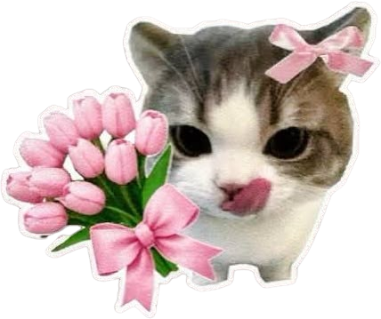
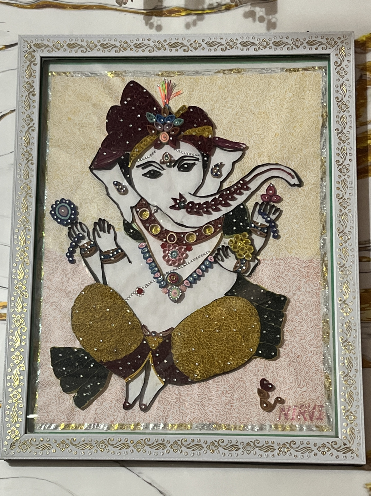
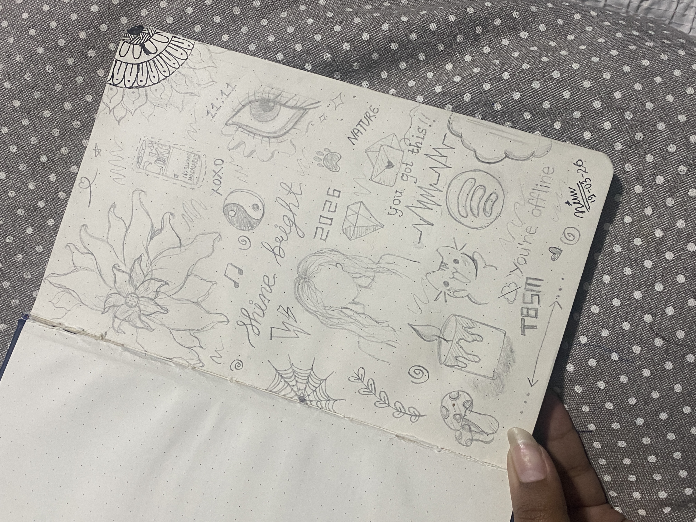
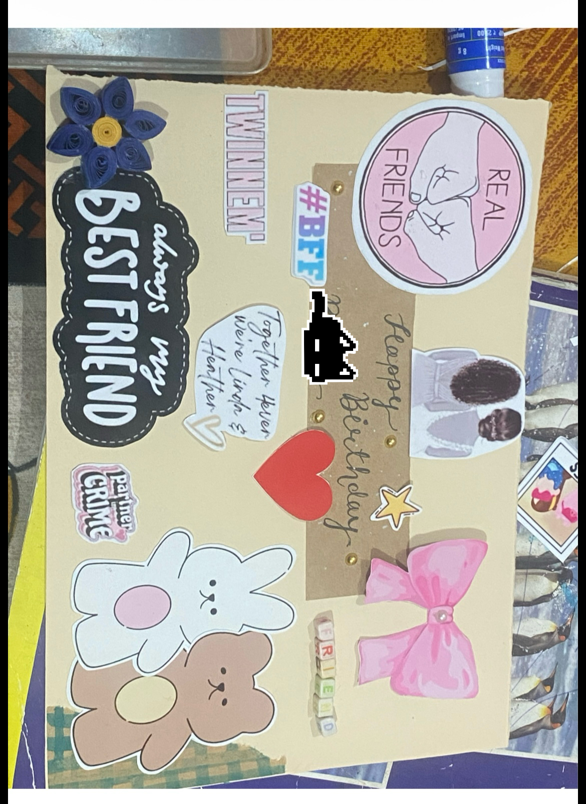
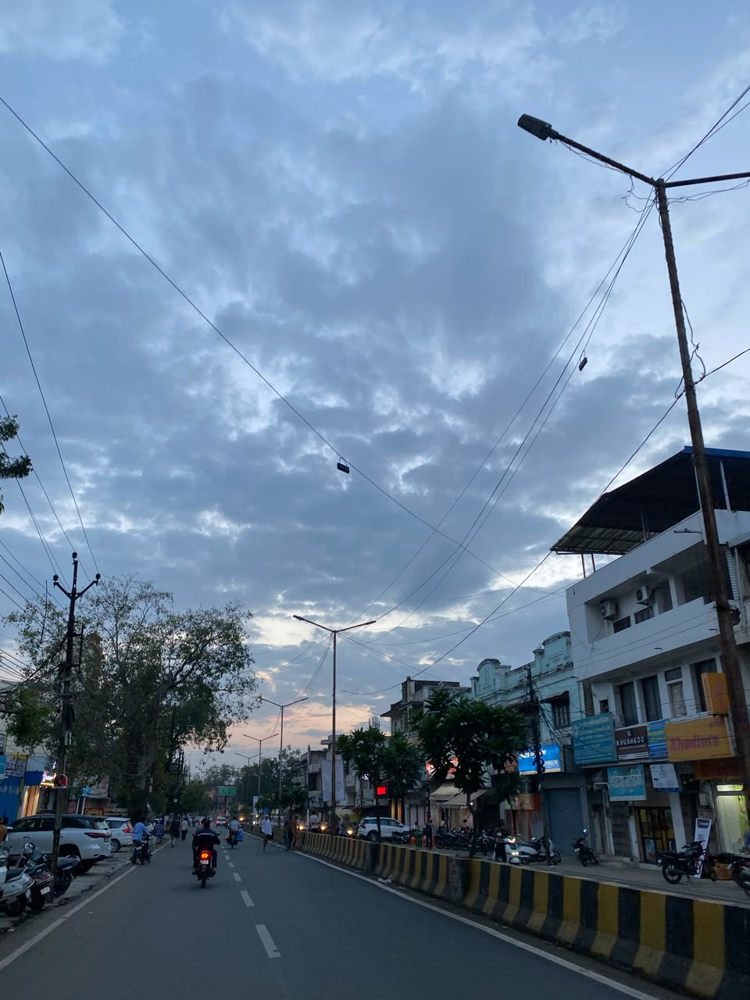
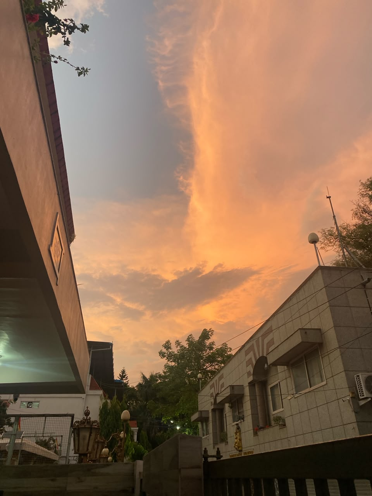
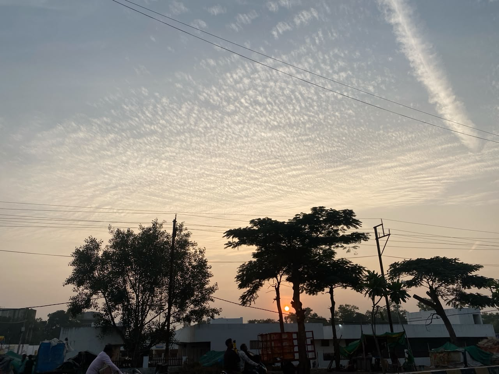
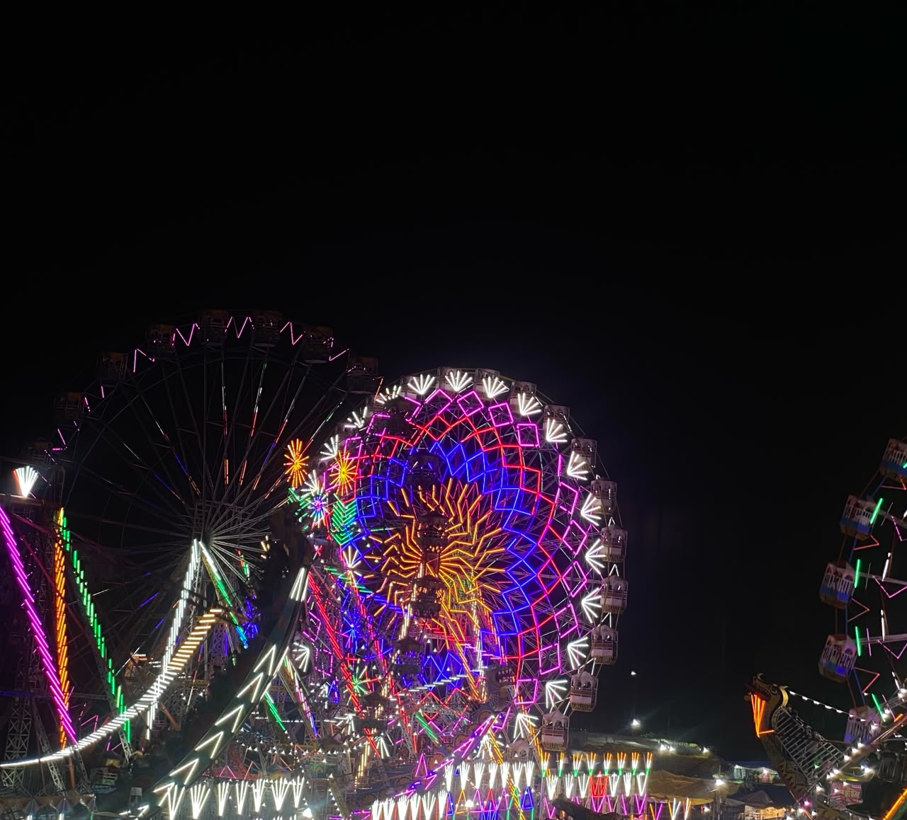
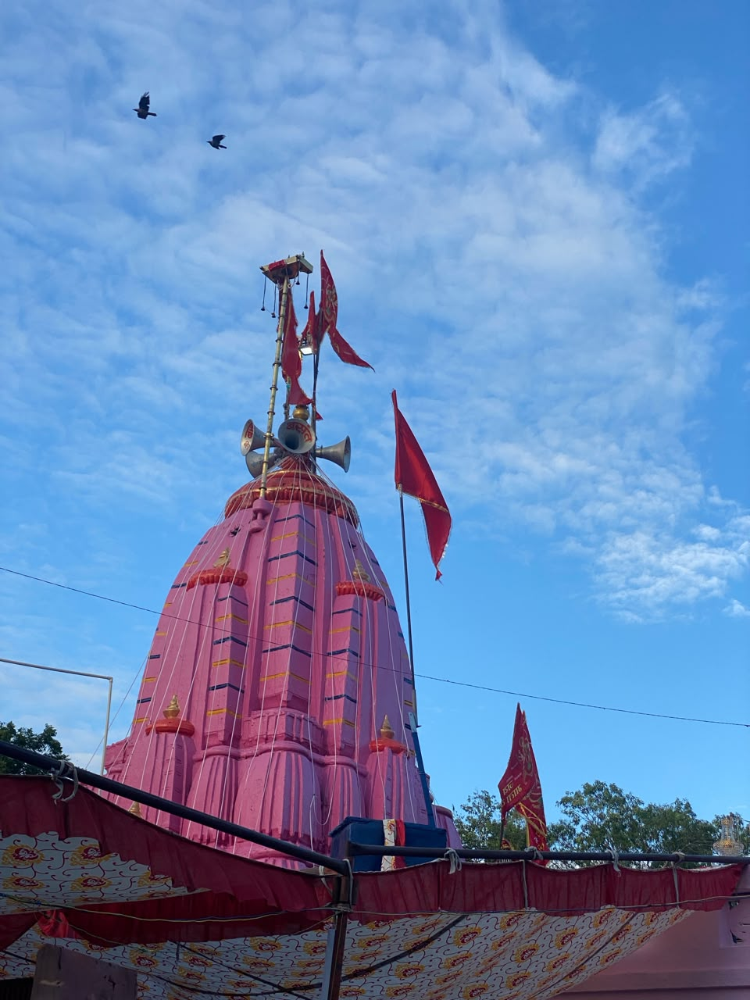
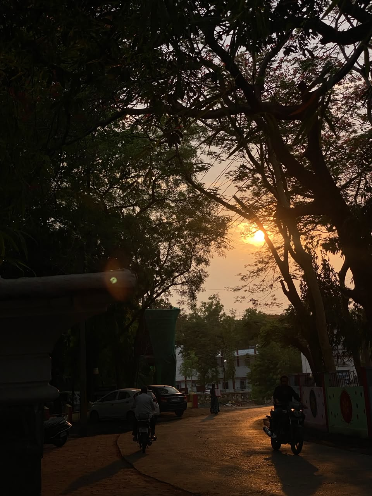

With team Eminence (five of us), I took part in the CDPG National Student Case Challenge 2026, Governance & Ecosystem Management track. We built P.R.I.S.M., a five-part framework (purpose limitation, regulatory oversight, interoperability, subject rights, data minimization), and applied it to a hotel check-in use case. We weren’t shortlisted.
Nirvi Guryani
Daydreamer in the clouds, maker of small things.
First-year BBA student at IIM Bangalore (Digital Business and Entrepreneurship), making content, poster and card templates, and photographs with a lot of whimsy.

Look up with me
Top secret. Do not open. Oh, you opened it anyway.
Hi, I’m Nirvi, and I look up a lot.
Mostly at clouds. To me they mean freedom, and I get lost in how beautiful they are, every single time.
Then I make things.
I’m curious about almost everything, and then my hands take over: a quilled Ganesh (1 to 1.5 weeks of tiny pieces, and I loved every bit), sketchbook pages, handmade cards.
And I keep tiny things.
A whimsy bead. A Blinkit bag. I collect them because I can already see what they could become.
The rest of me: I captained my school and district basketball teams. I read novels and psychology books, and I bake, sing, dance, and film unfiltered vlogs I haven’t posted yet. I also love thinking things over.
Meet the artist
Hi, I’m Nirvi. I draw, quill, photograph and keep tiny things, and I’m a first-year at IIM Bangalore. I’m just starting out as a freelancer, and this is what I’d love to make with you.
What I can make with you
- Content creation: ideas and visuals for posts and short videos, shaped around your story. I’m new to this, so every project starts with listening to what you want.
- Poster and card templates: layouts you can reuse and make your own. My handmade birthday card below shows my style: stickers, paper and a quilled flower.
- Photography: skies, streets and night lights, caught the way I notice them. Six of my photos are below.
What backs it up
- Teamwork and leadership: I captained my school and district basketball teams, and I worked in a team of five on the DigiYatra case challenge, where we built a framework together.
- Billing and records: during a 3 to 3.5 month internship at an electronics shop, I made 15 to 20 bills a day in the Marg app, recorded incoming stock, and handled debit and credit notes. Entering EMI product details was the trickiest part.
- Patience with small things: I quilled a Ganesh from tiny pieces over 1 to 1.5 weeks. It’s now framed.
- Handmade design: birthday cards and sketchbook pages, made from scratch.
- Languages: Hindi, English, Sindhi.
Things I’ve made
By hand









Case challenge
Resume
Nirvi Guryani
nirvi1247@gmail.com | linkedin.com/in/nirvi-guryani-328758441
Profile
First-year BBA student at IIM Bangalore, open to freelance work in content creation, poster and card templates, and photography.
Experience
Part-time intern, electronics and mobile shop (summer break, 3 to 3.5 months)
- Worked through the complete Marg app, making 15 to 20 e-bills a day.
- Recorded and tracked stock arriving from different wholesale suppliers, and prepared debit and credit notes.
- Re-checked past bills, and entered product details for items sold on EMI, the trickiest entry because financed items carry extra details.
Projects and leadership
- DigiYatra case challenge (team Eminence, five of us): took part in the CDPG National Student Case Challenge 2026, Governance & Ecosystem Management track. Together we built P.R.I.S.M., a five-part framework, and applied it to a hotel check-in use case. We weren’t shortlisted.
- Captain, school and district basketball teams: led the team in matches at both levels. Won 2 to 3 interhouse matches at school and took second place at Ratlam district level.
- Own creative projects: quilled a framed Ganesh over 1 to 1.5 weeks, filled a sketchbook page with doodles, and made handmade cards from scratch.
- This portfolio: planned and designed in HTML and CSS with an AI assistant, hosted on GitHub Pages.
Education
- IIM Bangalore, BBA in Digital Business and Entrepreneurship, expected 2029
- St. Joseph’s Convent Senior Secondary School: Class 12 (CBSE, commerce with maths), 2026, 88%
- St. Joseph’s Convent Senior Secondary School: Class 10 (CBSE), 2024, 91.6%
Skills
- Teamwork and leadership: captained school and district basketball teams; worked in a team of five on the DigiYatra case challenge.
- Billing and records: 15 to 20 bills a day in the Marg app during a 3 to 3.5 month internship.
- Patience with small things: quilled a Ganesh from tiny pieces over 1 to 1.5 weeks.
- Photography and handmade design: photos, birthday cards and sketchbook pages.
- Languages: Hindi, English, Sindhi.
Say hi
Have a poster, a card template, a photo or a content idea in mind? Tell me what you need, and let’s see what we can make together.